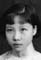
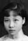
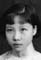

業
 

班業 名其添 = 周惠玲
Bän Ngèp [Kǐ Hëm] = Jiü Fì Lẽin
Bānyè [Qítiān] = Zhōu Huìlíng
光
景雲
Gēin Vũn
Jǐngyún
前
保英
Bāo Yëin
Bǎoyīng
遠
| 147,106,59,24 業 |

班業 名其添 = 周惠玲 Bän Ngèp [Kǐ Hëm] = Jiü Fì Lẽin Bānyè [Qítiān] = Zhōu Huìlíng |
|---|---|
| 148,107,60,25 光 |
景雲 Gēin Vũn Jǐngyún |
| 149,108,61,26 前 |
保英 Bāo Yëin Bǎoyīng |
| 150,109,62,27 遠 |